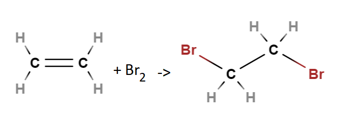
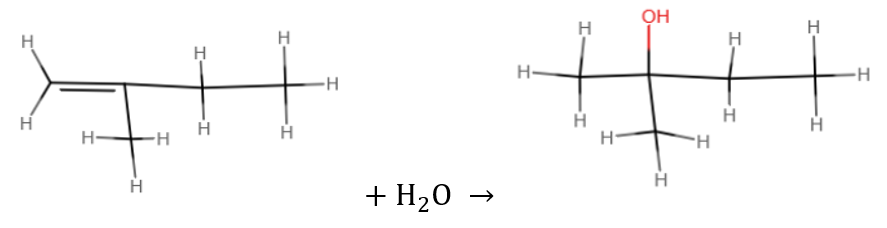

Alkeenit
Contents
Alkeenit#
Alkeenit ovat hiilivetyjä, joissa on ainakin yksi kaksoissidos. Ne ovat tärkeitä kemian teollisuudessa.
Avoketjuisten alkeenien, joissa on vain yksi kaksoissidos, yleinen molekyylikaava on \(\text{C}_n \text{H}_{2n}\). Alkaaneihin verrattuna vetyjä mahtuu molekyyliin siis kaksi vähemmän. Tämä johtuu siitä, että hiilten välillä on alkaaniin verrattuna ylimääräinen sidos, johon kuluu yksi sidoselektroni kahdelta vierekkäiseltä hiileltä.
Alkeenien reaktioita#
Yleinen alkeenin reaktio on additio, joka tarkoittaa lisäämistä. Toisin kuin alkaanien substituutioreaktiossa, molekyyliin siis tulee lisää atomeja. Samalla alkeeni voi muuttua alkaaniksi. Alkeenien kaksoissidoksien hajoamista olosuhteista johtuen kutsutaan hapettumiseksi. Alkeeneja voidaan myös tarkoituksella yhdistää pitkäksi ketjuksi kaksoissidoksia purkamalla. Tällöin reaktion nimi on polyadditio.
Halogeenien additio
Additioreaktiossa kaksoissidos purkautuu, ja hiilirunkoon liittyy entisen kaksoissidoksen molemmille puolille halogeeni. Reaktio on erilaisten kemikaalien synteeseissä hyödyllinen, sillä halogeenin voi myöhemmin sopivassa kohdassa prosessia vaihtaa muuhun ryhmään.
Esim. Bromin additio eteeniin \(\text{C}_2 \text{H}_4 + \text{Br}_2 → \text{C}_2 \text{H}_3 \text{Br} + \text{HBr}\)

Veden additio
Veden additio tapahtuu samaan tapaa kuin halogeenien additio, mutta molekyyliin liittyvät osat ovat peräisin vedestä. Vesimolekyyli pilkkoutuu osiin \(H\) ja \(OH\). Kun kaksoissidos aukeaa, vesimolekyylien osat liittyvät molekyylin kohtiin, jotka vapautuvat kaksoissidoksen muodostaneisiin hiiliin. Tuloksena on alkoholi. Alkoholeja käsitellään erikseen myöhemmin.
Esim. Veden additio 2-metyyli-1-buteeniin

Veden liittyminen noudattaa enimmäkseen Markovnikovin sääntöä: vety liittyy siihen hiilen, jossa jo ennestään on enemmän vetyä. Samassa reaktiossa voi kuitenkin muodostua myös sellaista yhdistettä, jossa vedyn ja \(\text{OH}\)-ryhmän sijainti onkin päinvastainen. Tuloksena on siis kahden yhdisteen seos, jossa kuitenkin Markovnikovin säännön mukaista tuotetta on enemmän.
Esim. Kun vettä liittyy 1-propeeniin, niin vety liittyy todennäköisemmin päätyhiileen, jossa vetyjä on kaksi (neliöllä merkityt), kuin keskimmäiseen hiileen, jossa on vain yksi vety (ympyröity). Tuloksena on siis todennäköisemmin keskimmäisen kuvan yhdiste. Myös oikeanpuoleinen yhdiste on mahdollinen.
Alkeenin hapettuminen
Hapettumiseksi kutsutaan tilannetta, jossa alkeenin kaksoissidos rikkoutuu. Hapettavat aineet voivat olla erilaisia happipitoisia yhdisteitä. Esimerkiksi kumista tehdyt tuotteet haurastuvat, kun ilmansaasteiden takia alailmakehään muodostunut otsoni hajottaa kumin kaksoissidoksia. Hapen yhdisteet voivat hapettaa, eli käytännössä härskiinnyttää, myös ravinnon rasvoja.
Alkeenien polyadditio
Polyadditiossa Useita alkeeneja liittyy yhteen, ja kaksoissidokset purkautuvat. Nimen etuliike poly viittaa siihen, että yhdisteessä on erittäin monta samanlaista molekyyliä, sen tarkemmin lukumäärää erittelemättä. Polyaddition avulla voidaan valmistaa esimerkiksi muoveja.
Esim. Polystyreenin (“styrox”) lähtökohtana on eräs aromaattinen alkeeni, styreeni.

Kuvan lähde: Wikipedia (Public domain).